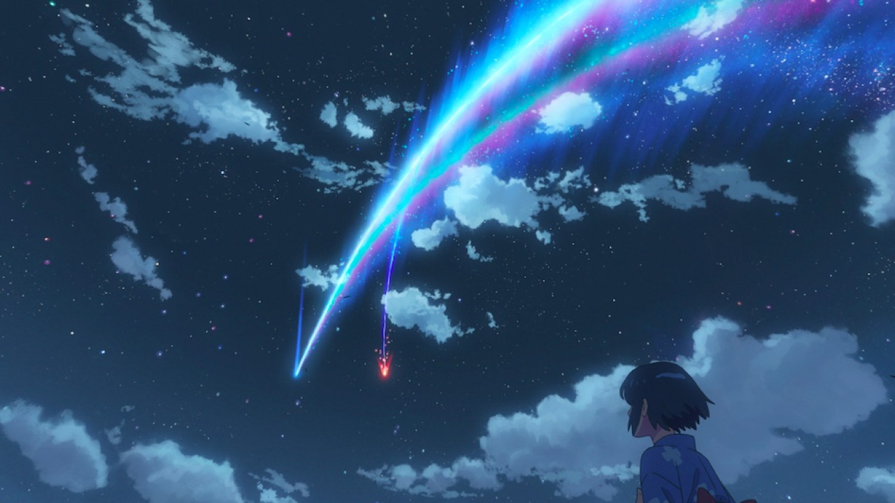
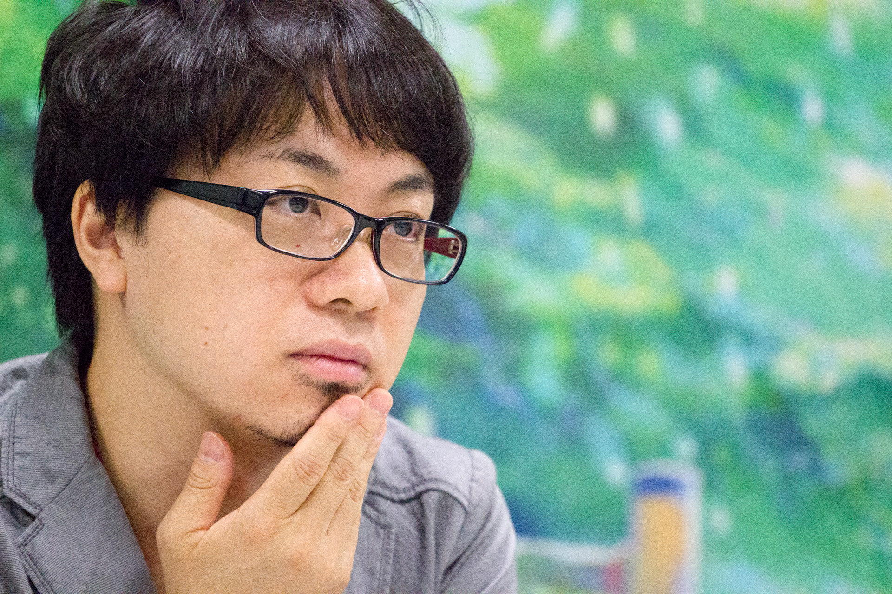

La France est friande d'animes et de films d'animation. L'animation japonaise a une place particulière dans le cœur des fans français et les dernières sorties de l'archipel sont toujours très attendues dans l'Hexagone. Et après les films Your Name et Les Enfants du temps, voilà que le réalisateur Makoto Shinkai partage une première image de son prochain anime : Suzume no Tojimari.

Connu sous le nom de Suzume no Tojimari au Japon, ce nouveau film doit s'inscrire dans la lignée des chefs-d'œuvre de Shinkai. Et pour cause, le réalisateur japonais s'entoure des mêmes éléments qui ont fait le succès de ses précédentes réalisations. Ainsi, Masayoshi Tanaka sera de nouveau au chara-design, Kenichi Tsuchiya à la direction de l'animation et Takumi Tanji à la direction artistique. Un trio que les fans d'animation japonaise avaient notamment pu retrouver dans Your Name et Voyage vers Agartha.
Suzume no Tojimari, littéralement "La porte de Suzume est fermée" en français, est prévu pour l'automne 2022. Un film qui contera les aventures de Suzume, une jeune fille de 17 ans qui vit sur l'île de Kyushu. Elle y fait la rencontre d'un jeune voyageur à la recherche d'une porte ancestrale. Suzume va en retrouver la trace perdue dans une montagne, avant de découvrir que la porte est en réalité magique et ouvre sur plusieurs endroits au Japon. Attention toutefois à celui qui referme cette porte. Un scénario qui aura le mérite de faire voyager tant ses protagonistes que ses spectateurs.
Pour fêter ce nouveau projet, Makoto Shinkai en a dévoilé la première image ce mercredi 15 décembre 2021. Une affiche colorée dans laquelle l'une de ses fameuses portes trône au beau milieu d'une étendue d'eau. Autour, des ruines recouvertes de végétation, laissant miroiter un monde particulier où la nature a repris ses droits. Une affiche où les éléments principaux sont l'air et l'eau, deux éléments particulièrement prisés par Shinkai. Pour en découvrir davantage, il faudra maintenant se montrer patient. Une première bande-annonce ne manquera pas de nous parvenir l'année prochaine, reste à savoir quand.